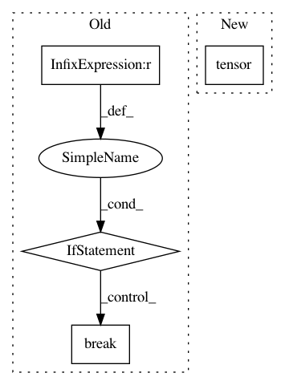

86ac9b94f772382087b4f92ebe0625173dfa314c,gpytorch/utils/linear_cg.py,,linear_cg,#Any#Any#Any#Any#Any#Any#Any#Any#Any#,11
Before Change
// If residual are sufficiently small, then exit loop
// Alternatively, exit if this is our last iteration
torch.norm(residual, 2, dim=-2, out=residual_norm)
if (residual_norm < tolerance).all() and not (n_tridiag and k < n_tridiag_iter):
break
// Update precond_residual
// precon_residual{k} = M^-1 residual_{k}
precond_residual = preconditioner(residual)
// beta_{k} = (precon_residual{k}^T r_vec_{k}) / (precon_residual{k-1}^T r_vec_{k-1})
residual_inner_prod.add_(eps)
After Change
result,
alpha,
residual_inner_prod,
torch.tensor(eps),
beta,
residual,
precond_residual,
In pattern: SUPERPATTERN
Frequency: 3
Non-data size: 4
Instances
Project Name: cornellius-gp/gpytorch
Commit Name: 86ac9b94f772382087b4f92ebe0625173dfa314c
Time: 2019-01-23
Author: gardner.jake@gmail.com
File Name: gpytorch/utils/linear_cg.py
Class Name:
Method Name: linear_cg
Project Name: cornellius-gp/gpytorch
Commit Name: 86ac9b94f772382087b4f92ebe0625173dfa314c
Time: 2019-01-23
Author: gardner.jake@gmail.com
File Name: gpytorch/utils/linear_cg.py
Class Name:
Method Name: linear_cg
Project Name: cornellius-gp/gpytorch
Commit Name: a1e8bcc26a4b432776620b242023adb7acf206e3
Time: 2019-01-27
Author: gardner.jake@gmail.com
File Name: gpytorch/utils/linear_cg.py
Class Name:
Method Name: linear_cg
Project Name: PIQuIL/QuCumber
Commit Name: 9a2903dac097a7f3633f6c828533ed385c7159c9
Time: 2019-07-17
Author: emerali@users.noreply.github.com
File Name: qucumber/utils/data.py
Class Name:
Method Name: extract_refbasis_samples